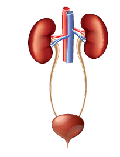

1. Circulatory system transports these throughout the body
a. Oxygen
b. Nutrient
c. Hormones
d. All of these
2. Main organ of respiration in human body is
a. Stomach
b. Spleen
c. Heart
d. Lungs
3. Breakdown of food into smaller molecules in our body is known as
a. Muscle contraction
b. Respiration
c. Digestion
d. Excretion
1. A group of organs together make up an dash system
2. The part of the skeleton that protects the brain is dash
3. The process by which the body removes waste is dash
4. The dash is the largest sense organ in our body
5. The endocrine glands produce chemical substances called dash
1. Blood is produced in the bone marrow.
2. All the waste products of the body are excreted through the circulatory system.
3. The other name of food pipe is alimentary canal.
4. Thin tube-like structures which are the component of circulatory system are called blood vessels.
5. The brain, the spinal cord and nerves form the nervous system.
1. Ear - Cardiac muscle
2. Skeletal System - Flat muscle
3. Diaphragm - Sound
4. Heart - Air sacs
5. Lungs - Protection of internal organs
1. Stomach, Large intestine, Oesophagus, Pharynx, Mouth, Small Intestine, Rectum, Anus
2. Urethra, Ureter, Urinary Bladder, Kidney
1. Arteries is Carry blood from the heart
Dash is carry blood to the heart.
2. Lungs is Respiratory system
Dash is Circulatory system.
3. Enzymes is Digestive glands
Dash is Endocrine glands
1. Describe about skeletal system.
2. Write the functions of epiglottis.
3. What are the three types of blood vessels?
4. Define the term "Trachea".
5. Write any two functions of digestive system.
6. Name the important parts of the eye.
7. Name the five important sense organs.
1. Write a short note on rib cage.
2. List out the functions of the human skeleton.
3. Differentiate between the voluntary muscles and involuntary muscles.
1 List out the functions of Endocrine system and Nervous system.
2. Label the diagram given below to show the four main parts of the urinary system and answer the following questions.

A. Which organ removes extra salts and water from the blood?
B. Where is the urine stored?
C. What is the tube through which urine is excreted out of the body?
D. What are the tubes that transfer urine from the kidneys to the urinary bladder called?
1. What will happen if the diaphragm shows no movement?
2. Why is the heart divided into two halves by a thick muscular wall?
3. Why do we sweat more in summer?
4. Why do we hiccup and cough sometimes when we swallow food?